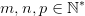
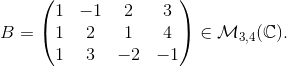
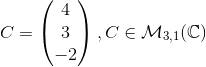
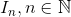

Produsul matricelor
Produsul a două matrice
Definiția M15: Produsul a două matrice
Fie  și matricele și
Numim produsul dintre matricele  și
și  (în această ordine) matricea definită prin cu
(în această ordine) matricea definită prin cu
Observație:
Numărul de coloane ale matricei trebuie să fie egal cu numărul de linii ale matricei .
Cazuri particulare
1. Înmulțirea a două matrice pătratice de ordinul 2
Fie matricele pătratice  și
și
Produsul celor două matrice va fi matricea ale cărei elemente le vom calcula astfel:
 pentru elementul vom îmbina prima linie a primei matrice cu prima coloană a celei de-a doua matrice (folosind formula din definiție).
pentru elementul vom îmbina prima linie a primei matrice cu prima coloană a celei de-a doua matrice (folosind formula din definiție).
analog, pentru elementul  vom îmbina linia
vom îmbina linia  a primei matrice cu coloana
a primei matrice cu coloana  a celei de-a doua matrice astfel:
a celei de-a doua matrice astfel:
Exemplu:
Fie matricele pătratice și
Atunci:
2. Înmulțirea a două matrice pătratice de ordinul 3
Fie matricele pătratice și
Produsul celor două matrice va fi matricea ale cărei elemente le vom calcula astfel:
pentru elementul vom îmbina linia a primei matrice cu coloana a celei de-a doua matrice astfel:
![\begin{align*} c_{11}&=a_{11}\cdot b_{11}+a_{12}\cdot b_{21}+a_{13}\cdot b_{31}\\ c_{12}&=a_{11}\cdot b_{12}+a_{12}\cdot b_{22}+a_{13}\cdot b_{32}\\ c_{13}&=a_{11}\cdot b_{13}+a_{13}\cdot b_{23}+a_{13}\cdot b_{33}\\ c_{21}&=a_{21}\cdot b_{11}+a_{22}\cdot b_{21}+a_{23}\cdot b_{31}\\ c_{22}&=a_{21}\cdot b_{12}+a_{22}\cdot b_{22}+a_{23}\cdot b_{32}\\ c_{23}&=a_{21}\cdot b_{13}+a_{22}\cdot b_{23}+a_{23}\cdot b_{33}\\ c_{31}&=a_{31}\cdot b_{11}+a_{32}\cdot b_{21}+a_{33}\cdot b_{31}\\ c_{32}&=a_{31}\cdot b_{12}+a_{32}\cdot b_{22}+a_{33}\cdot b_{32}\\ c_{33}&=a_{31}\cdot b_{13}+a_{32}\cdot b_{23}+a_{33}\cdot b_{33}\\ \end{align*}](../../media/webbooks/283/14145/images/equations/jcma4jfqjn45n1agqubn4w==.gif) .
.
![\begin{align*} \Rightarrow C=\begin{pmatrix} a_{11}\cdot b_{11}+a_{12}\cdot b_{21}+a_{13}\cdot b_{31} & a_{11}\cdot b_{12}+a_{12}\cdot b_{22}+a_{13}\cdot b_{32} &a_{11}\cdot b_{13}+a_{13}\cdot b_{23}+a_{13}\cdot b_{33} \\ a_{21}\cdot b_{11}+a_{22}\cdot b_{21}+a_{23}\cdot b_{31} & a_{21}\cdot b_{12}+a_{22}\cdot b_{22}+a_{23}\cdot b_{32} &a_{21}\cdot b_{13}+a_{22}\cdot b_{23}+a_{23}\cdot b_{33} \\ a_{31}\cdot b_{11}+a_{32}\cdot b_{21}+a_{33}\cdot b_{31}&a_{31}\cdot b_{12}+a_{32}\cdot b_{22}+a_{33}\cdot b_{32} & a_{31}\cdot b_{13}+a_{32}\cdot b_{23}+a_{33}\cdot b_{33} \end{pmatrix}. \end{align*}](../../media/webbooks/283/14145/images/equations/vpmb7uoqsfh6l4j_9tal3q==.svg)
Exemplu:
Fie matricele pătratice și
Atunci
![\begin{align*} A\cdot B&=\begin{pmatrix}1 &0 &-1 \\ 2 & 1&0 \\ 1 & -1& 3\end{pmatrix}\cdot \begin{pmatrix} 2 &1&0 \\ 1& 1 &2\\-1&2&1\end{pmatrix}\\\\ &=\begin{pmatrix} 1\cdot2+0\cdot1+(-1)\cdot(-1) & 1\cdot1+0\cdot1+(-1)\cdot2 & 1\cdot0+0\cdot2+(-1)\cdot1\\ 2\cdot2+1\cdot1+0\cdot(-1) & 2\cdot1+1\cdot1+0\cdot2 & 2\cdot0+1\cdot2+0\cdot1 \\ 1\cdot2+(-1)\cdot1+3\cdot(-1) & 1\cdot1+(-1)\cdot1+3\cdot2 & 1\cdot0+(-1)\cdot2+3\cdot1 \end{pmatrix}\\\\ &=\begin{pmatrix} 2+0+1 &1+0-2 &0+0-1 \\ 4+1+0&2+1+0 &0+2+0 \\ 2-1-3& 1-1+6 &0-2+3 \end{pmatrix}\\ \\&=\begin{pmatrix} 3 &-1 &-1 \\ 5 &3 &2 \\ -2& 6 &1 \end{pmatrix} \end{align*}](../../media/webbooks/283/14145/images/equations/t1mng9blw0-ypyu8txjjka==.gif)
Alte exemple:
Calculați produsul matricelor:
- Fie matricele și 
Atunci:
![\begin{align*} &A\cdot B= \begin{pmatrix} 1 &2 &3 \\ 1& -1 & 2 \end{pmatrix}\cdot\begin{pmatrix} 1 &-1 &2&3 \\ 1&2&1 &4\\ 1&3&-2&-1 \end{pmatrix}\\\\ &=\begin{pmatrix} 1\cdot1+2\cdot1+3\cdot1 & 1\cdot(-1)+2\cdot2+3\cdot3 &1\cdot2+2\cdot1+3\cdot(-2) &1\cdot3+2\cdot4+3\cdot(-1) \\ 1\cdot1+(-1)\cdot1+2\cdot1 & 1\cdot(-1)+(-1)\cdot2+2\cdot3 &1\cdot2+(-1)\cdot1+2\cdot(-2) &1\cdot3+(-1)\cdot4+2\cdot(-1) \end{pmatrix}\\\\ &=\begin{pmatrix} 1+2+3 &-1+4+9 &2+2-6 &3+8-3 \\ 1-1+2& -1-2+6 & 2-1-4 &3-4-2 \end{pmatrix}\\\\ &=\begin{pmatrix} 6 &12 &-2 &8 \\ 2&3 &-3 &-3 \end{pmatrix} \end{align*}](../../media/webbooks/283/14145/images/equations/yy9rb6rvz2sxkmjmtdzehq==.svg)
2. Fie matricele și
Atunci:
3. Fie matricele și
Atunci:
4. Fie matricele și
Atunci:
Observație:
Din proprietățiile adunării și înmulțirii numerelor complexe rezultă proprietățiile înmulțirii matricelor.
Proprietățile înmulțirii matricelor
Propoziția M16: Proprietățile înmulțirii matricelor
1. Asociativitatea:
2. Distributivitatea înmulțirii față de adunare:
3. Existența elementului neutru pentru înmulțirea matricelor pătratice:
unde  este matricea unitate de tipul
este matricea unitate de tipul
Exemplul 1: Arătăm că înmulțirea matricelor este o operație asociativă. (Arătăm că are loc proprietatea a.)
Fie matricele și
Atunci:
Exemplul 2: Arătăm că înmulțirea matricelor este o operație distributivă față de operația de adunare a matricelor. (Arătăm că are loc proprietatea b-prima relație.)
Fie matricele și
Atunci:

Exemplul 3: Arătăm că înmulțirea matricelor este o operație distributivă față de operația de adunare a matricelor. (Arătăm că are loc proprietatea b-a doua relație.)
Fie matricele  și
Atunci:

Exemplul 4: Arătăm că operația de înmulțire a matricelor pătratice admite existența unui element neutru și acesta este matricea unitate . (Arătăm că are loc proprietatea c.)
Fie matricea pătratică și
Atunci:
Observație:
În general, operația de înmulțire a două matrice nu este comutativă.
Exemplu:
Fie matricele pătratice și
Atunci: